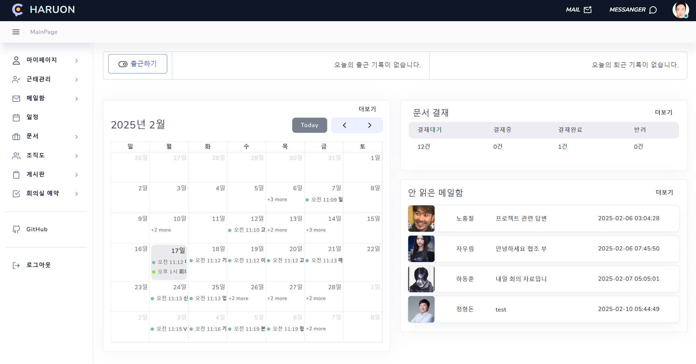

파이널 프로젝트 2025.01.06 ~ 2024.01.31
프랜차이즈 그룹웨어

Keyword
# Spring boot # Spring Security
# MySQL # JAVA # JQuery # AJax # MyBatis #JSP
개발 인원 : 5명
팀원과 협업하여 진행한 최종 팀 프로젝트입니다.
온라인 프랜차이즈 그룹웨어 시스템을 설계하고 구현하였습니다.
기본적인 인트라넷 기능 외에도 가맹점 매출 보고서, 교육 일정 관리,
가맹점 문의 기능을 추가하여 프랜차이즈 운영 시스템을 완성했습니다.
두번째로 하는 팀 프로젝트였던 만큼 세미 프로젝트에서 부족했던 기술적 부분을 보완하여
프로젝트의 완성도를 높였습니다.
Function
사원 등록, 로그인 및 사용자 관리, 근태 관리, 일정 및 캘린더 관리,
사원 마이페이지 조회 및 수정, 전자결재 시스템, 게시판 기능, 가맹점 관리,
조직도 및 직원 관리, 회의실 예약 시스템 등이 있습니다.
[TEST 계정 : 팀장]
이메일 : 20240007
비번 : Qwer1234@
[TEST 계정 : 대리
이메일 : 20240010
비번 : Qwer1234@
[TEST 계정 : 사원]
이메일 : 20240002
비번 : Qwer1234@
담당 업무
[결재 문서]
- 기본, 매출보고서, 휴가신청서, 출장신청서 총 4개의 기안서 작성폼 구현
- 기안 작성 시 모달로 띄워진 사원리스트에서 중간결재자/최종결재자/수신참조자 선택가능
- 기안 제출 후 결재대기 상태일때 수정,삭제 가능
- 결재문서에서 수정과 삭제시 서비스 레이어에서 유효성 검증을 통해 본인이 아니면 로그인 페이지로 리다이렉트 처리
- 결재문서에서 기안자가 정한 결재라인, 참조자 만 열람이 가능한 권한 검증 메서드 구현
- 결재자가 결재 시 사인이 없으면 alert 창 띄운 후 마이페이지 가서 전자결재 이미지 등록 처리
- 결재완료 후 pdf 파일로 다운로드 가능
- 결재목록, 참조 리스트에서 데이터를 효율적으로 관리하기 위해
Datatables 라이브러리와 AJAX 통신을 활용하여 리스트 페이지를 구현
페이징, 검색 기능을 포함하여 사용자 편의성을 높였습니다.
[신규 사원등록]
- 사원 초대 시 JavaMailSender를 활용하여 이메일 발송 구현.
- Spring Security의 CustomUserDetailsService로 권한 기반 접근 제어 및 인증 처리.
- 데이터베이스에 새로운 사원 등록 시 중복 여부 확인 및 유효성 검증 로직 구현.
[마이페이지]
- MultipartFile로 프로필 이미지 업로드 및 서버에 저장, 기존 파일 삭제 처리 구현
- 사원은 본인의 기본 정보를 실시간으로 수정 가능.
- 결재 시스템에서 사용되는 디지털 서명 이미지를 추가하거나 수정 가능.
[일정 관리]
- FullCalendar.js와 REST API를 활용해 달력에 일정 표시.
- 일정 페이지에서 AJAX 통신을 통해 서버에서 실시간으로 불러와 달력에 표시.
- 사용자가 새 일정을 추가할 수 있는 기능 제공
- 일정 상세보기 페이지에서 수정 , 삭제 기능
구현 과정에서 겪은 문제해결 및 개선사례
[결재문서 작성 폼]
문제 :
결재 문서를 작성할 때, 각 유형별로 개별 페이지를 만들어야 할지
아니면 한 페이지에서 유형을 선택하면 필요한 항목만 동적으로 표시하도록
구현해야 할지 고민이 있었습니다.
해결 및 개선 :
유형별 공통 항목이 많다는 점을 고려하여, 한 페이지에서 유형을 선택하면
필요한 값만 표시하고 나머지는 숨기는 방식을 선택했습니다.
숨겨진 부분의 내용은 초기화하여 불필요한 데이터가 전달되지 않도록 처리했습니다.
최종적으로, 각 유형별로 입력된 데이터를 분리하여 DB에 저장되도록 설계했습니다.
장점 :
한 페이지에서 유형별 폼을 관리하므로 새로운 유형이 추가될 경우
페이지 이동 없이 직관적으로 폼을 작성할 수 있습니다.
공통 필드와 개별 필드의 검증을 분리하여 처리할 수 있습니다.
숨겨진 필드의 데이터를 초기화하여 불필요한 정보가 저장되는 것을 방지하고,
필요한 데이터만 서버로 전송되도록 최적화할 수 있습니다.
개선점 :
유형별 입력 항목이 많아지면 가독성이 떨어질 가능성이 있으며
유형이 많아질수록 한 페이지 내에서 개별 필드의 검증이 증가하는 문제가 발생할 수 있습니다.
유형을 변경할 때 필요하지 않은 필드 값이 그대로 남아있어
잘못된 데이터가 포함될 가능성이 있습니다.
이 문제를 해결하기 위해, 컨트롤러에서 공통 필드 값에 대한 기본적인 검증을 수행한 후
서비스 레이어에서는 각 유형별 필수 입력 값만 체크하여
불필요한 데이터 입력을 최소화하고 데이터 무결성을 지켰습니다.
매퍼에서 INSERT 시 DTO에 포함된 불필요한 데이터가 들어가도 자동으로 필터링되도록 처리하여,
잘못된 데이터가 DB에 저장되는 것을 방지했습니다.
[결재문서 상세보기]
문제 :
결재 문서 리스트를 구현할 때, 처음에는 각 결재 문서 유형별로 URL을 다르게 설정하고,
이를 각각 @GetMapping으로 매핑하여 상세보기 페이지로 이동하도록 구현했습니다.
그러나 이 방식은 반복되는 코드가 많아 유지보수에 어려움이 있었습니다.
첫 번째 문제 : 새로운 결재 유형이 추가될 때마다 컨트롤러에서 별도의 매핑을 추가해야 한다는 점이었습니다.
두 번째 문제 : 각 유형별 메서드에서 결재 첨부파일을 불러오는 코드가 반복되어 코드의 가독성과 유지보수성이 떨어지는 점이었습니다.
해결 및 개선 :
이러한 문제를 해결하기 위해 URL을 @PathVariable을 활용하는 방식으로 리팩토링했습니다.
즉, 결재 문서의 유형과 해당 문서의 PK 번호를 URL에 포함시켜
단일 @GetMapping에서 모든 유형을 처리할 수 있도록 변경했습니다.
이를 통해 각 문서 유형을 별도로 매핑할 필요 없이 URL 자체로 문서 유형을 식별하면서도
유지보수가 용이한 고유한 URL을 가질 수 있도록 개선했습니다.
개선점 :
URL 만으로 문서 유형을 식별할 수 있도록 설계했지만, 이 프로젝트를 모르는 사람들도
쉽게 이해할 수 있도록 직관적인 URL 구조를 고려했어야 한다고 생각합니다.
현재는 공통 코드(ex: C01, C02)만을 사용하다 보니
URL 자체만으로는 어떤 문서의 상세보기인지 쉽게 알기 어려운 문제가 있습니다.
공통 코드의 description 컬럼이 한글로 저장되어 있어
이를 직접 URL에 적용하는 것이 어려웠던 점이 개선이 필요한 부분입니다.
[결재문서 상세보기 - 권한 검증 & 보안]
문제 :
결재문서 상세보기에서 결재라인, 참조자, 해당 팀의 부서장만 문서를 열람할 수 있도록 구현해야 했습니다.
그러나 권한이 없는 사용자가 URL을 직접 입력하여 접근하려는 경우를 어떻게 차단할지 고민이 있었습니다.
기본적으로, 본인만 결재문서를 볼 수 있도록 하는 경우에는 Spring Security 에서 세션 정보를 가져와 간단히 비교하면 되었지만, 부서장, 결재자(중간/최종), 참조자도 접근할 수 있도록
해야 하는 상황에서 권한 검증 방식을 어떻게 구현할지 고민이 되었습니다.
해결 및 개선 :
이 문제를 해결하기 위해 Access 메서드를 구현하여, 현재 로그인된 사용자의 역할(Role)과 PK 값을 가져와 해당 문서에 접근할 수 있는 사용자들의 PK 목록과 비교하도록 처리했습니다.
이를 통해, 접근 권한이 있는 사용자만 상세보기를 허용하고, 권한이 없는 사용자가 URL 을 직접 입력해 접근을 시도할 경우 차단하도록 구현했습니다.
[결재문서리스트 페이징 처리]
문제 :
결재문서 리스트를 구현할 때, 처음에는 템플릿에 포함된
Datatables 라이브러리를 사용하여 자동으로 페이징 및 검색 기능을 적용했습니다.
초기 구현 시에는 데이터값을 그대로 넘겨주기만 하면
자동으로 페이징과 검색이 처리되기 때문에 편리하다고 생각했습니다.
그러나 시간이 지나면서 리스트 페이지를 열 때 로딩 속도 차이가
체감될 정도로 느려지는 문제가 발생했습니다.
디버깅을 해보니, 서버에서 데이터를 한꺼번에 받아온 뒤
프론트에서 전체 데이터를 로딩한 후 페이징을 처리하는 구조였습니다.
이 방식은 데이터량이 많아질수록 응답 시간이 증가하고, 성능 저하로 이어지는 문제가 있었습니다.
해결 및 개선 :
이 문제를 해결하기 위해 Datatables 라이브러리의 기능을 검색하여
AJAX를 활용해 커스텀으로 페이징 및 검색을 처리할 수 있는 방법을 찾았습니다.
이에 따라 Mapper에서 페이징 처리와 검색 기능을 추가한 후
서버에서 필요한 데이터만 가져오도록 개선하여 로딩 속도를 최적화했습니다.
장점 :
페이징 속도 향상: 한 번에 모든 데이터를 불러오는 것이 아니라, 필요한 데이터만 서버에서 가져와서 처리하므로 응답 시간이 크게 단축됐습니다.
클라이언트 성능 최적화: 서버에서 데이터를 미리 정제한 후 전송하므로, 브라우저가 대량 데이터를 관리할 필요 없이 적은 리소스로도 원활하게 작동할 수 있습니다.
확장성 증가: 데이터가 많아질수록 기존 방식은 성능 저하가 심했지만, 서버에서 직접 페이징 및 검색을 처리하므로 데이터량이 증가해도 원활한 처리가 가능합니다.
Development Environment
Language: Java17, HTML5, CSS,JavaScript, SQL
Framework: SpringBoot, MyBatis, BootStrap
Library: JSTL, JQuery, Lombok
Database: MySQL
WAS: Tomcat 10.1
OS: Windows, Mac OS
Tools: STS4, MySQLWorkBench8.0, Github
Service Environment
OS: Ubuntu
(22.04)
Platform : AWS Lightsail